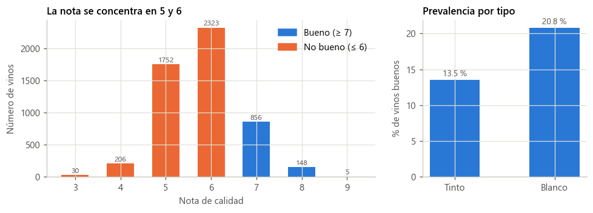
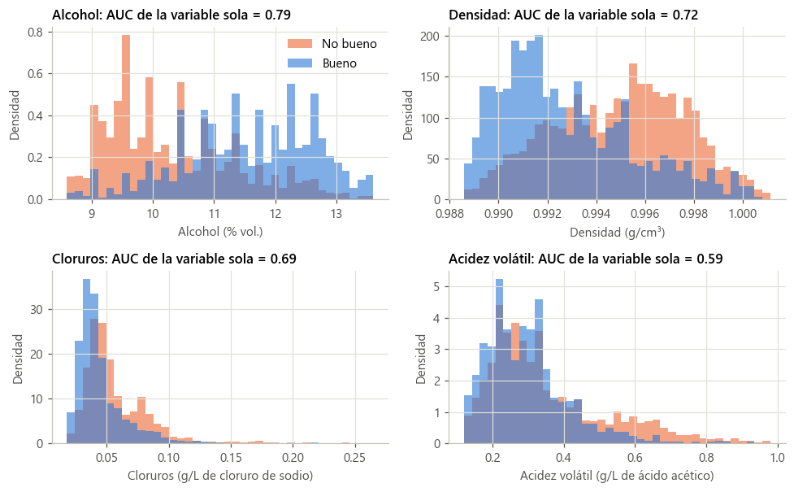
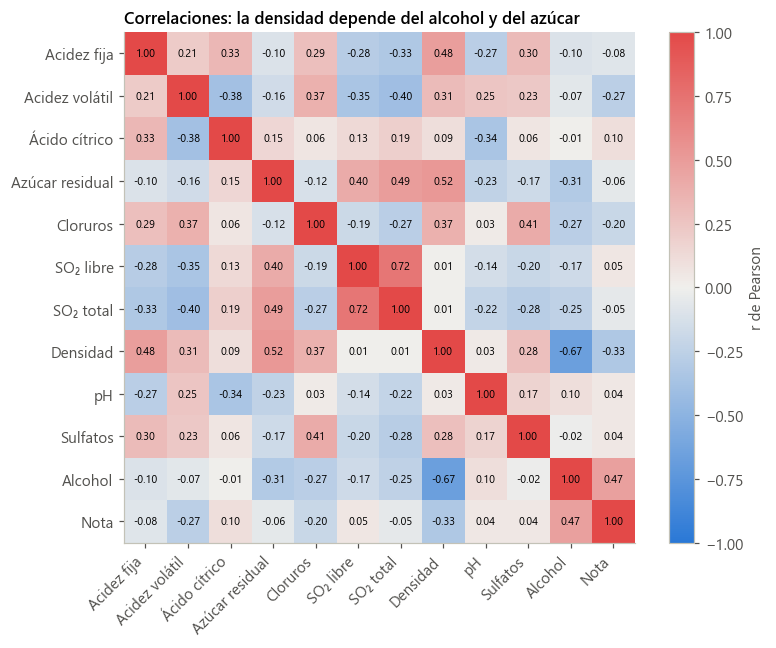

Datos: ETL, EDA y auditoría de fuga#
ETL#
Los archivos winequality-red.csv (1599 tintos) y winequality-white.csv (4898 blancos) se unen con una variable tipo_vino. De las 6497 filas, 1177 son duplicados exactos (misma química, mismo tipo y misma nota); se eliminan antes de partir los datos, porque un duplicado en entrenamiento y en prueba mide memoria y no generalización. Quedan 5320 vinos sin valores faltantes. La variable objetivo es el evento quality >= 7.

Figura 10 Distribución de la nota y prevalencia del evento por tipo de vino (5320 vinos sin duplicados).#
El 19.0 % de los vinos es bueno (Figura 10): la clase de interés es minoritaria, lo que justifica estudiar el balanceo y medir con AUC y PR-AUC además de exactitud. Los blancos tienen más vinos buenos (20.8 %) que los tintos (13.5 %), por lo que el tipo entra como variable.
EDA#

Figura 11 Distribución por clase de las cuatro variables que mejor separan los vinos buenos (AUC de cada variable usada sola como puntaje).#
El alcohol es la variable que más separa las clases (AUC 0.79 usada sola), seguida de densidad. Las distribuciones se superponen bastante en todas las variables (Figura 11): ninguna basta por sí sola y los modelos deben combinar varias.

Figura 12 Matriz de correlación de Pearson entre las variables y la nota.#
La nota se correlaciona sobre todo con el alcohol (r = 0.47), y la densidad está muy ligada al alcohol (r = -0.67), lo que anticipa que ambas se repartirán la importancia en las explicaciones SHAP (Figura 12). Las demás correlaciones con la nota son débiles: la relación es no lineal y con interacciones, lo que favorece a los ensambles de árboles.
Declaración de los datos#
Conjunto principal: Wine Quality#
Aspecto |
Detalle |
|---|---|
Procedencia |
Comisión de Viticultura de la Región de los Vinhos Verdes (Portugal), publicado en el UCI Machine Learning Repository (conjunto 186). |
Referencia |
Cortez, P., Cerdeira, A., Almeida, F., Matos, T. y Reis, J. (2009). Modeling wine preferences by data mining from physicochemical properties. Decision Support Systems, 47(4), 547–553. |
Licencia |
Creative Commons Attribution 4.0 (CC BY 4.0). |
Periodo |
Muestras analizadas entre mayo de 2004 y febrero de 2007. |
Contenido |
6497 vinos (1599 tintos y 4898 blancos), 11 variables fisicoquímicas medidas en laboratorio y la nota sensorial (mediana de al menos tres catadores, escala de 0 a 10). |
Procesamiento |
Se unen tintos y blancos con la variable |
Archivos |
|
Sesgos y limitaciones conocidos#
Una sola región y época. Solo hay vinos Vinho Verde de 2004 a 2007; no hay garantía de que las relaciones valgan para otras regiones, uvas o añadas.
Desbalance de tipos. Hay casi tres blancos por cada tinto; el modelo ve menos ejemplos de tintos buenos.
Desbalance de clases. Solo 1 de cada 5 vinos es bueno y las notas 3 y 9 son muy raras.
Etiqueta subjetiva. La nota es la mediana de catadores; dos vinos con la misma química pueden tener notas distintas.
Variables ausentes. No hay uva, precio, marca ni añada; por privacidad del productor tampoco hay identificadores de lote. El análisis de residuos del Entregable 2 sugiere que vinos consecutivos de los archivos se parecen más de lo que explica la química (posibles lotes), lo que puede hacer algo optimista la validación aleatoria.
Usos inadecuados#
Reemplazar la evaluación sensorial o la certificación oficial.
Fijar precios, rechazar lotes o tomar decisiones comerciales sin una validación local.
Hacer recomendaciones de consumo de alcohol o de salud.
Conjuntos adicionales (solo para la evaluación del modelo original)#
Todos provienen del UCI Machine Learning Repository con licencia CC BY 4.0 y se usan sin modificar, salvo quitar filas duplicadas exactas.
Conjunto |
DOI |
Evento |
Nota ética |
|---|---|---|---|
Abalone (Nash et al., 1994) |
10.24432/C55C7W |
anillos ≥ 11 |
Datos biológicos, sin personas. |
Cardiotocography (Ayres-de Campos et al., 2000) |
10.24432/C51S4N |
NSP ≥ 2 (sospechoso o patológico) |
Registros clínicos anonimizados; el modelo no está validado para uso clínico. |
Student Performance, portugués (Cortez y Silva, 2008) |
10.24432/C5TG7T |
G3 ≥ 10 (aprobado) |
Contiene sexo, edad y datos familiares de estudiantes: no debe usarse para decidir sobre personas. Se excluyen G1 y G2. |
Heart Disease, Cleveland (Detrano et al., 1989) |
10.24432/C52P4X |
num ≥ 1 (enfermedad) |
Datos clínicos con sexo y edad; 6 valores faltantes imputados dentro de cada pliegue. Uso solo comparativo. |
Los cuatro se eligieron antes de evaluar cualquier modelo en ellos, con el criterio fijado en experiments/protocolo.md: clasificación binaria obtenida al cortar una respuesta ordinal que viene en los propios datos. La procedencia detallada está en data/adicionales/procedencia.json.
| Conjunto | Título | n | Numéricas | Categóricas | Niveles de la respuesta | Umbral del evento | Prevalencia | Faltantes |
|---|---|---|---|---|---|---|---|---|
| vino | Wine Quality (Vinho Verde) | 5320 | 11 | 1 | 7 | 7 | 0.190 | 0 |
| abalone | Abalone (edad por anillos) | 4177 | 7 | 1 | 28 | 11 | 0.346 | 0 |
| cardiotocografia | Cardiotocografía (estado fetal) | 2115 | 21 | 0 | 3 | 2 | 0.221 | 0 |
| estudiantes | Student Performance (portugués) | 649 | 13 | 17 | 17 | 10 | 0.846 | 0 |
| corazon | Heart Disease (Cleveland) | 303 | 9 | 4 | 5 | 1 | 0.459 | 6 |
Auditoría de fuga de información#
Antes de correr los experimentos definitivos se verificó con código cada vía de fuga que enumera el enunciado. La función src/auditoria.py::tabla_auditoria reproduce la tabla.
C:\Users\USER\miniconda3\envs\mi_entorno\Lib\site-packages\tqdm\auto.py:21: TqdmWarning: IProgress not found. Please update jupyter and ipywidgets. See https://ipywidgets.readthedocs.io/en/stable/user_install.html
from .autonotebook import tqdm as notebook_tqdm
| Riesgo | Verificación | Resultado | Conclusión |
|---|---|---|---|
| Preprocesamiento ajustado con todos los datos | Media del escalador dentro del pipeline frente a la media del entrenamiento externo y de todos los datos | coincide con el entrenamiento: True; difiere de todos los datos hasta en 0.0602 | Sin fuga: el escalado y el one-hot se ajustan dentro de cada pliegue. |
| Balanceo aplicado a la prueba | Número de predicciones de un pipeline con SMOTE sobre el pliegue de prueba | 1064 predicciones para 1064 vinos de prueba | Sin fuga: SMOTE y ADASYN solo actúan en el ajuste (pipeline de imbalanced-learn). |
| Búsqueda de hiperparámetros con datos de prueba | Los 3 pliegues internos se construyen solo con índices del entrenamiento externo | True | Sin fuga: la prueba externa nunca entra en la búsqueda; el umbral y la calibración del modelo original usan solo el entrenamiento (fuera de bolsa). |
| Duplicados entre particiones | Duplicados exactos antes de partir y vinos de prueba con un gemelo químico en el entrenamiento | 1177 duplicados exactos eliminados (6497 → 5320); 0.04 % de los vinos de prueba tiene un gemelo químico (misma química, otra nota) | Sin duplicados exactos; los gemelos químicos con nota distinta son ruido de la etiqueta, no fuga. |
| Variables que codifican la respuesta | Asociación de cada variable con la nota y origen de las variables | máxima |r| = 0.47 (alcohol); todas son mediciones de laboratorio previas a la cata | Sin fuga: ninguna variable se deriva de la nota. |
| Mezcla temporal o espacial (lotes) | No hay fecha ni productor; se compara la validación aleatoria con una validación por bloques consecutivos del archivo | ver el estudio de validación por bloques en el capítulo de evaluación ampliada | Riesgo residual: si vinos del mismo lote caen en entrenamiento y prueba, las métricas pueden ser algo optimistas. |
Gemelos químicos. Con las particiones de la repetición 1, la distancia mediana de un vino de prueba a su vecino más cercano del entrenamiento (variables estandarizadas) es prácticamente la misma que la de un vino de entrenamiento a su vecino más cercano dentro del entrenamiento, y casi ningún vino de prueba tiene una copia química en el entrenamiento:
| Pliegue | Prueba con gemelo exacto | Prueba con vecino a < 0.1 DE | Distancia mediana prueba → entrenamiento | Distancia mediana dentro del entrenamiento |
|---|---|---|---|---|
| 0 | 0.09% | 1.79% | 0.866 | 0.863 |
| 1 | 0.00% | 0.75% | 0.861 | 0.875 |
| 2 | 0.00% | 1.22% | 0.883 | 0.869 |
| 3 | 0.09% | 1.32% | 0.870 | 0.878 |
| 4 | 0.00% | 0.85% | 0.879 | 0.871 |
Lotes y orden del archivo. Los residuos del Entregable 2 mostraron autocorrelación en el orden de los archivos originales, que desaparece al desordenar los vinos: vinos consecutivos se parecen más de lo que explica su química, probablemente porque pertenecen al mismo productor o lote. No hay una variable de lote, así que no se puede agrupar de forma exacta. Como verificación, cada modelo se evaluó también con pliegues formados por bloques de 10 vinos consecutivos del archivo, que separan entre entrenamiento y prueba a los vinos vecinos:
| Modelo | AUC con pliegues aleatorios | AUC con bloques del archivo | Diferencia |
|---|---|---|---|
| CatBoost | 0.8620 | 0.8534 | -0.0086 |
| Random Forest | 0.8605 | 0.8494 | -0.0112 |
| Bosque Ordinal Focalizado | 0.8588 | 0.8527 | -0.0061 |
| LightGBM | 0.8580 | 0.8489 | -0.0091 |
| XGBoost | 0.8558 | 0.8469 | -0.0089 |
| KNN | 0.8474 | 0.8369 | -0.0105 |
| SVM | 0.8449 | 0.8437 | -0.0012 |
| Regresión Logística (L1/L2) | 0.8289 | 0.8271 | -0.0018 |
| Decision Tree | 0.7950 | 0.8007 | +0.0057 |
| Naive Bayes | 0.7645 | 0.7623 | -0.0022 |
Con bloques del archivo el AUC cae en promedio 0.005 (en el Bosque Ordinal Focalizado, 0.006). Esa caída estima el optimismo que introducen los vinos «hermanos» cuando quedan a ambos lados de la partición. Es un riesgo residual compartido por todos los modelos (no cambia la comparación entre ellos, que usa siempre las mismas particiones), y se declara como limitación.